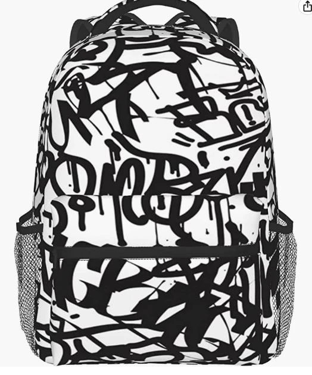

Accesorios con Graffiti

Pulseras, collares y mochilas decoradas con diseños inspirados en los murales de la comuna.
Pulseras, collares y mochilas decoradas con diseños inspirados en los murales de la comuna.
Cuadros tallados y pintados a mano que representan escenas urbanas y la vida barrial.
Bolsos y mochilas Wayuu intervenidos con símbolos de la cultura hip hop y urbana.
Miniaturas de murales, escaleras eléctricas y otros íconos del barrio convertidos en recuerdos.